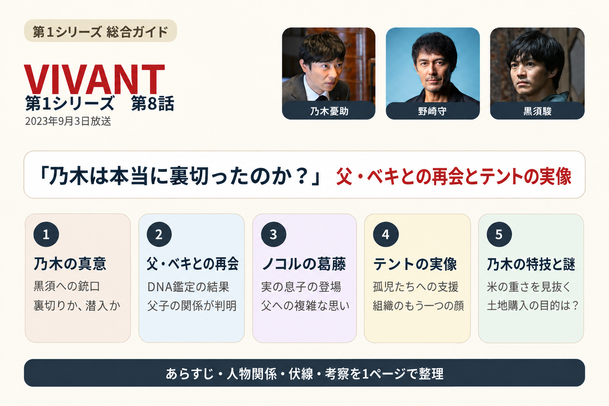
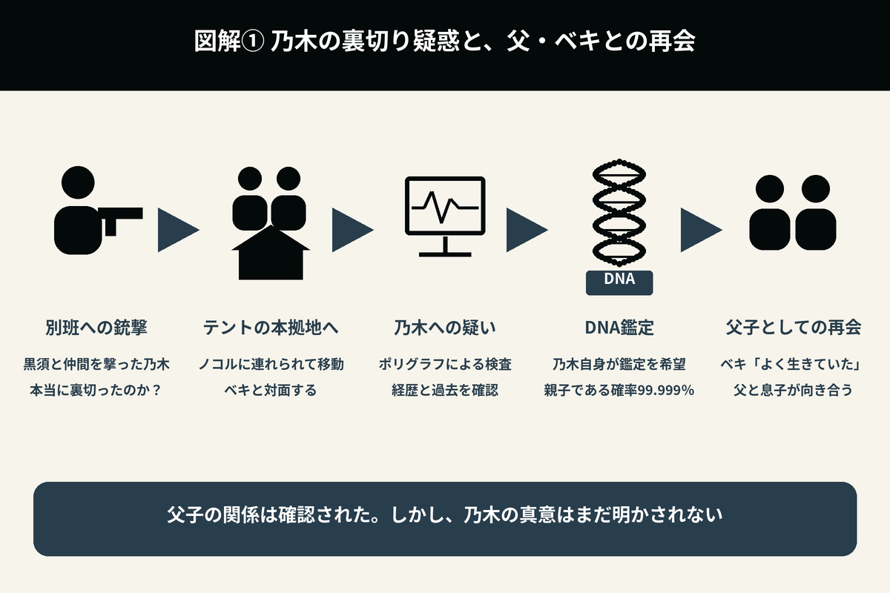
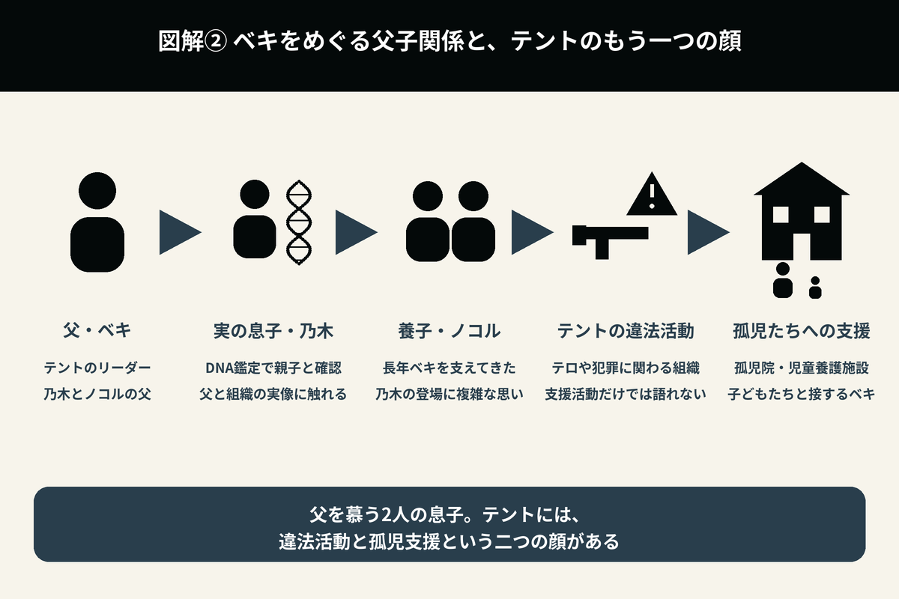
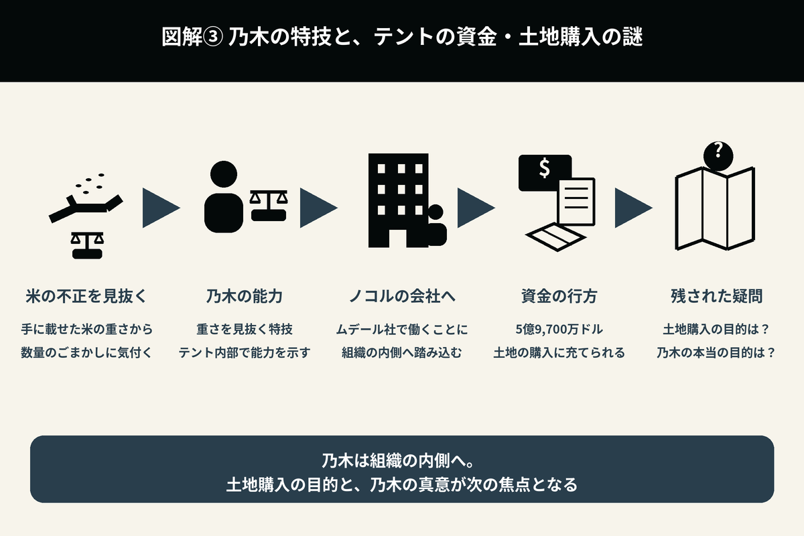

『VIVANT』第8話（2023年9月3日放送）
第8話は、『VIVANT』の世界が大きく覆る回です。これまで「テント＝国際テロ組織」という印象で見てきた視聴者に対し、テントの本当の姿が少しずつ明かされます。同時に、40年ぶりに再会した父・ベキと乃木の親子の物語が、本格的に始まります。

1. 乃木は本当に別班を裏切ったのか
第7話のラストで、乃木は黒須を撃ち、別班の仲間たちにも銃口を向けた。
第8話は、その続きから始まる。
乃木はノコルに連れられ、テントの本拠地へ向かう。
一方、視聴者には「本当に裏切ったのか？」という疑問が残ったまま、物語が進む。
乃木自身は何も弁解せず、静かにテントの一員として振る舞う。
ベキは乃木に、黒須を撃つよう命じる。
「本当に裏切ったのなら、私の前で殺せ」という指示だった。
一方、公安とバルカ警察が見守る中、4つの木製の棺が飛行機に積み込まれる。
薫のもとには、乃木の通帳と印鑑、家の権利書が届く。
テント側に身を置く乃木の姿は、別班にいた頃とは違って見える。しかし、時折見せる表情は、何か別の目的を持っていることも感じさせる。
2. 40年ぶりの父子再会
ついに乃木は、テントのリーダー、ノゴーン・ベキと対面する。
幼い頃に生き別れた父との再会だった。
ベキも乃木も、多くを語らない。
まず、乃木はポリグラフによる嘘発見器の検査を受ける。
その中で、東京大学大学院に通いながら別班員になったことを話す。
乃木はDNA鑑定を望み、親子でなければ殺してくれと申し出る。
さらに、父と最後に別れたときのことをベキに話すよう求められる。
乃木は、記憶喪失になり、記者の飯田さんに日本へ連れ帰ってもらった経緯を話す。
DNA鑑定の結果は、2人が親子であることを99.999％の確率で示していた。
ベキは静かに乃木を見つめ、言葉を掛ける。
「よく生きていた」
一方の乃木も感情を表には出さないが、長年抱えてきた空白が少しずつ埋まっていくような場面だった。

3. ノコルの複雑な気持ち
ベキの養子として育てられたノコルは、突然現れた乃木を素直に受け入れられない。
自分は長年、ベキを支えてきた。
しかし、実の息子である乃木が現れたことで、ベキの視線が乃木へ向く。
ノコルは嫉妬しながらも、その感情を表に出さず、冷静に接しようとする。
この回では、ノコルもまた「父を愛する息子」の一人であることが、丁寧に描かれる。
4. テントの本当の姿
乃木はテントの内部を見て驚く。
民間軍事会社「PMSC Y2K」に連れて行かれ、5億9,700万ドルの行方に疑問を抱く。
テントの活動には、
- 孤児院・児童養護施設
- 学校
- 医療施設
- 地域住民への支援
なども含まれていた。
さらに、ベキは孤児たちと笑顔で接している。
これまで「テロ組織」としか思われていなかったテントには、孤児や貧しい人々を支える活動という、もう一つの顔があった。
もちろん、違法な活動をしている事実は変わらない。
しかし、「悪だけの組織ではない」という事実に、乃木も視聴者も大きく揺さぶられる。

5. ベキが語る40年前の真実
ベキは、自分が日本を離れることになった経緯を、少しずつ語り始める。
別班の任務中、日本政府から見捨てられたこと。
祖国へ戻ることもできず、異国で生き抜くしかなかったこと。
そして、孤児たちを救うために、現在の組織を築いたこと。
もちろん、まだすべてを話したわけではない。
それでも乃木は、
「父は、自分が思っていた人物とは違うのではないか」
と考え始める。
6. 野崎も真実へ近づく
一方、野崎は公安として、乃木の行方を追い続けている。
乃木は本当に裏切ったのか。
それとも、別の目的があるのか。
判断できないまま、調査を続ける。
野崎は現地で得た情報を整理し、
「テントには、まだ知られていない顔がある」
という事実に、少しずつ気付き始める。
ただし、この時点ではベキや乃木との直接対決には至らない。
7. 乃木の特技
乃木は青年養護施設の問題への対応に同行し、倉庫で3.2トンの米を見つける。それは、量をごまかし、ロシアへ密輸しようとしていた米だった。
乃木は手に米を載せ、ごまかしを見抜く。
その後、乃木はノコルと同じ服を着せられ、ノコルの会社で働くことになる。
父親と再会したことで、乃木には任務だけでは割り切れない感情が芽生えている。
ノコルの会社は「ムデール社」。
5億9,700万ドルは、土地の購入に充てられている。
8. 新たな謎
第8話の終盤でも、乃木はテント側に残る。
しかし、その目的は依然として明かされない。
別班を裏切ったのか。
潜入任務を続けているのか。
視聴者に答えが示されないまま、今度は、
「ベキは本当に悪なのか？」
という新たな疑問が生まれる。
第8話は、善と悪の境界線が大きく揺らぐ一話だった。

第8話で新たに分かったこと
| 項目 | 第8話終了時点 |
|---|---|
| ベキ | DNA鑑定により、乃木の実父であることが確認される。 |
| ノコル | ベキの養子であり、乃木に複雑な感情を抱く。 |
| テント | 孤児院や医療支援など、社会貢献活動も行っていることが判明する。 |
| 乃木 | テント内部へ入り、真実を見極めようとしている。 |
| 野崎 | テントには別の顔があることを察知し始める。 |
| 物語 | 「テント＝絶対悪」という構図が大きく揺らぐ。 |
第8話の見どころ
第8話は、シリーズの価値観が大きく変わる回です。
最大の見どころは、40年ぶりに再会したベキと乃木の静かな対面でしょう。激しい感情をぶつけ合うのではなく、長い年月を経た親子だからこその沈黙や視線によって、心情が表現されています。
また、それまで「テロ組織」としか見えていなかったテントに、孤児や貧しい人々を救うという、もう一つの使命があることも明らかになります。そのため、視聴者は「正義とは何か」「悪とは何か」を改めて考えさせられます。
第8話は、アクションよりも人物の心情や信念を丁寧に描き、最終章へ向けて物語の見え方を一変させる、重要な一話でした。
第7話のあらすじ・伏線・考察へ
記事公開後にリンクを接続します